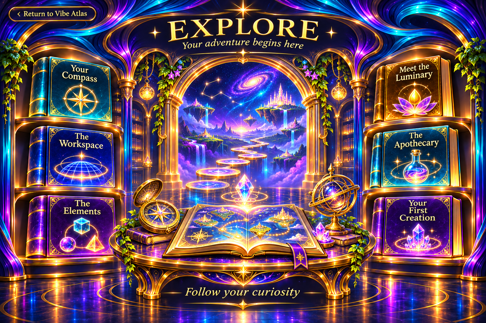

Explore — Your adventure begins here
‹ Return to Vibe Atlas
Gather your tools. Follow your curiosity.
Begin wherever your curiosity lands. These guides introduce the spaces, objects, and conversations of the Vibe Architect IDE.
Find your bearings
Visit the Workspace to understand the creative space, explore the Elements to learn its objects, or meet the Luminary.
You can return to the Atlas whenever you want a wider view.
The Workspace is the place to see your creation take shape through objects and their relationships.
See what is taking shape
This guide introduces the spatial environment and the visible results that help you understand your developing project.
Detailed controls and screenshots await verification against the current IDE build.
Elements are the objects through which a creation gains structure, behavior, and relationships.
Discover their meaning
The reference will explain each reviewed Element, what it represents, and how it relates to the rest of a project.
The current Element catalog will be supplied with verified examples.
The Luminary is designed as a Peer and Mentor: a companion for questions, proposals, reflection, and discovery.
Bring your idea
Describe what you want to create, ask about an unfamiliar object, or explore a possibility together. Your choices shape the journey.
Pause is available whenever you want space to consider.
The Apothecary is the intended place to create or modify Elements your project needs.
Prepare what your creation needs
This reference will connect missing or changing Elements with the relevant authoring workflow.
Available actions will be documented after verification in the current IDE build.
Start with something you would enjoy seeing come to life.
- Describe its purpose in your own words.
- Identify the objects and relationships it needs.
- Explore a proposal with the Luminary.
- Review the visible result and choose what comes next.
This is an introductory path. Build-specific instructions will be added after the complete workflow has been verified.
The gateway opens this introduction to your creative journey. Choose a guide, gather your bearings, and begin with an idea that matters to you.
This portal is an illustrated reference. A launch connection to the IDE has not been configured.
Explore Your First Creation